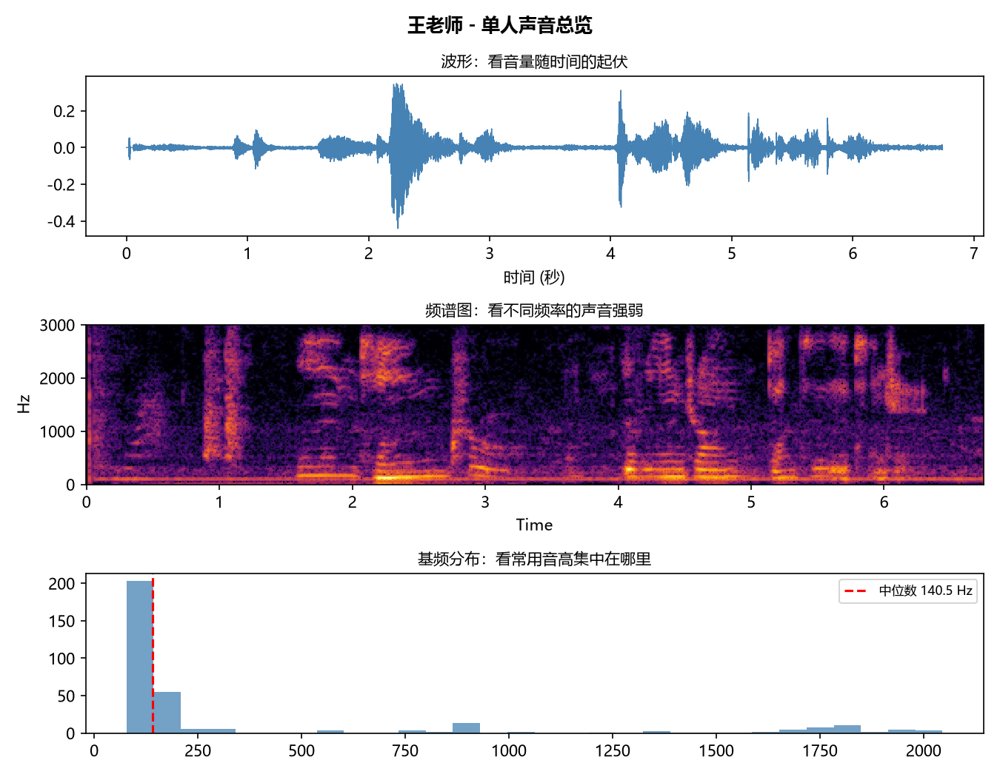
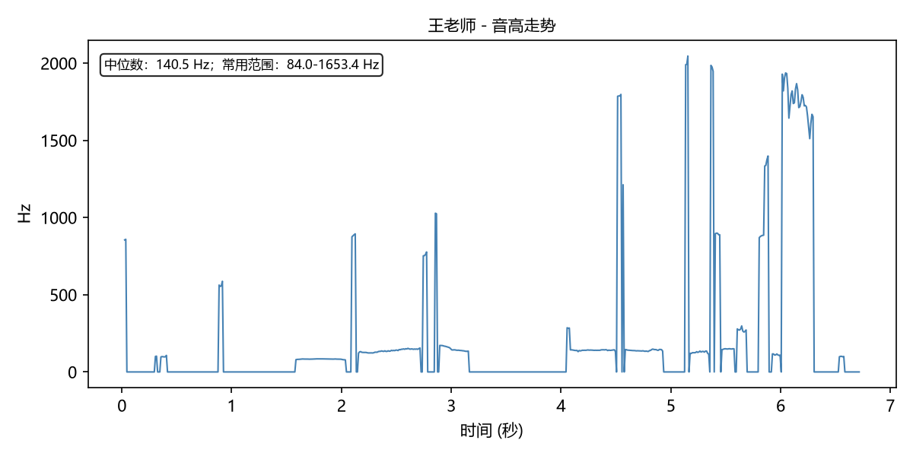
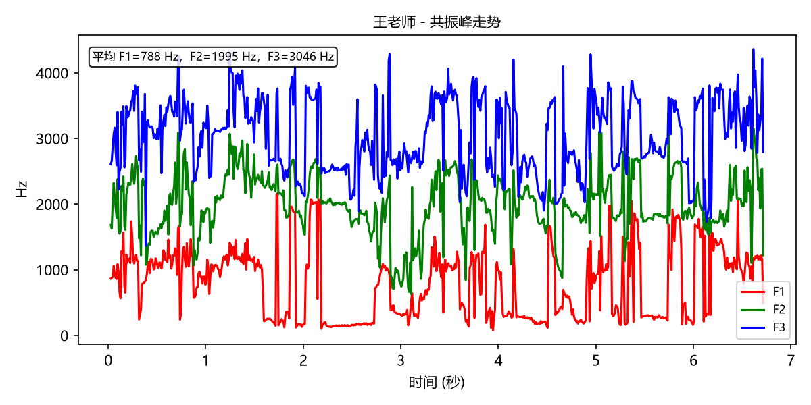
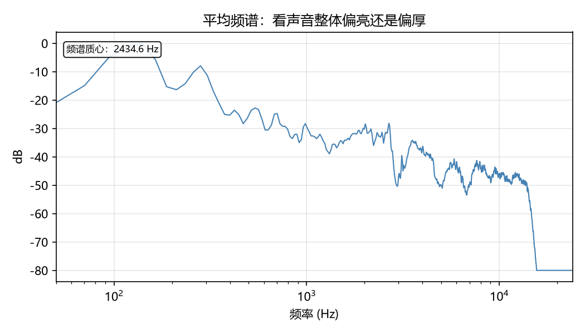
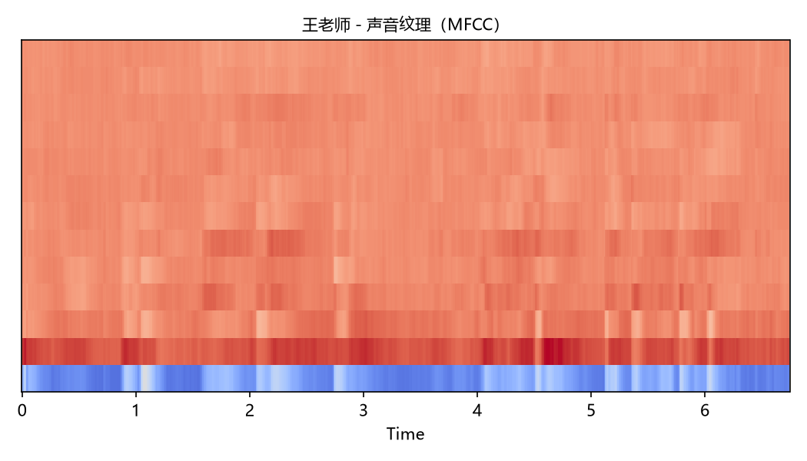

王老师
单人声音 HTML 报告
| 音频名称 | KLSH_M_Raw_01 |
|---|---|
| 基频 F0 | 140.5 Hz |
| 常用音高范围 | 84.0-1653.4 Hz |
| 声线倾向 | 男声倾向 0.23 |
| 时长 | 6.7 秒 |
| 频谱质心 | 2435 Hz |
| 频谱带宽 | 3496 Hz |
| 频谱滚降点 | 5437 Hz |
| F1 平均值 | 788 Hz |
| F2 平均值 | 1995 Hz |
| F3 平均值 | 3046 Hz |
| 声音纹理变化 | 20.97 |
| RMS | 0.042 |
| ZCR | 0.031 |
怎样理解这些数字
- 基频 F0：可以理解为声音的主要高低。
- 声线倾向：根据音高和声学特征给出的粗略倾向，不等同于真实性别。
- 频谱质心：数值越高，声音通常越亮；数值越低，声音通常越厚。
- RMS：平均音量强度，过低可能说明录音偏小。
- ZCR：声音里细碎变化的多少，噪声较多时可能偏高。




